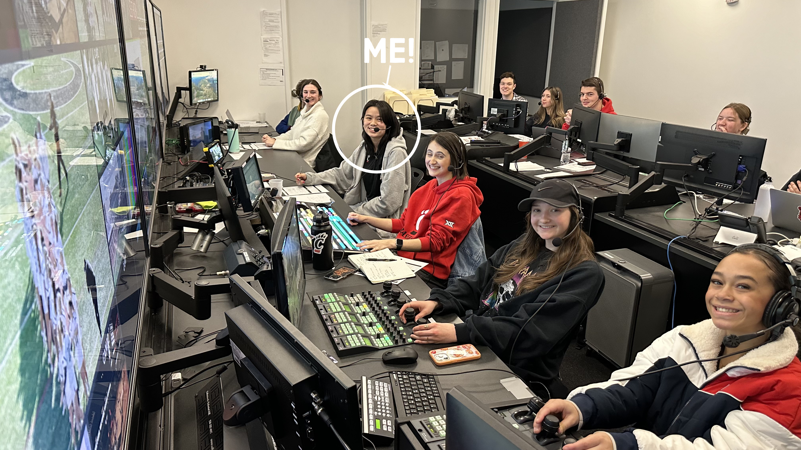

Hi, my name is Katie McDonie! I am a graduate of the University of Cincinnati, where I earned a Bachelor of Fine Arts in Media Production with a minor in Information Technology, graduating summa cum laude.
Since August 2021, I have built my career in live sports production, working in fast-paced control room environments across Division I athletics broadcasts. I have served in key roles including director, producer, technical director, camera operator, replay operator (Mira and 3Play), graphics operator (XPression and AJT LiveBook), A1, and video shader. I regularly lead and collaborate with multi-person crews, execute complex live rundowns, and manage high-pressure decision-making in real time.
Beyond sports broadcasting, I have contributed to narrative and short film projects spanning all three stages of production, including director, producer, screenwriter, grip, photographer, slate operator, and video editor. This creative foundation enhances my ability to tell compelling stories within live and post-production environments alike.